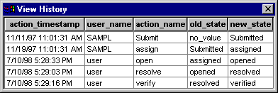

Tool Mentor: Viewing the
History of a Defect Using Rational ClearQuest
Purpose
This tool mentor describes how the Rational ClearQuest administrator can set up the
ClearQuest defect form to include a History control that enables ClearQuest
users to view and track the history of defects.
Related Rational Unified Process information:
Overview
Records move through a lifecycle, from submission toward resolution. In ClearQuest, each stage in this lifecycle is a "state", and each
movement from one state to another is called a "state transition".
 See ClearQuest Designer
online Help > Contents > Getting started with
ClearQuest Designer > ClearQuest concepts > Improving the software
lifecycle process with ClearQuest. See ClearQuest Designer
online Help > Contents > Getting started with
ClearQuest Designer > ClearQuest concepts > Improving the software
lifecycle process with ClearQuest.
Within the ClearQuest client, you can view the history of a record. This
history of a record includes the date actions occurred (such as moving to the
next state or making a modification), the user name, the action name, the old
state, and the new state.
See ClearQuest Designer
online Help > Contents > Working with record forms
> Editing forms > Form control reference > History control.
1. Viewing the History of a Defect 
The Rational ClearQuest administrator can customize the ClearQuest schema to display
the history of records.
See ClearQuest Designer
online Help > Contents > Working with schemas >
Understanding schemas.
The View History command displays the changes in the state of a record and
the dates on which the changes occurred. The contents of the View History dialog
are read-only.
To view the history of a record, a user performs these steps:
- Run a query that includes the record.
- In the Result set tab, select the record.
- From the menu bar, choose View > History.
- To close the dialog, click
 . .

2. Adding a History Control to a ClearQuest record form
ClearQuest Designer enables the ClearQuest administrator to create customized
forms for submitting, viewing, and modifying records.
See ClearQuest Designer
online Help > Contents > Working with record
forms > Understanding forms and controls.
The ClearQuest administrator can include a history control on a form to
display the state transitions of the record.
- Check out the schema
See ClearQuest Designer
online Help > Contents > Working with schemas
> Checking out a schema.
- Add a history control to the form
See ClearQuest Designer
online Help > Contents > Working with record
forms > Editing forms > Adding controls to a form.
- Check in the schema
See ClearQuest Designer
online Help topics:
- > Contents > Working with schemas
> Checking in a schema
- > Contents > Working with schemas
> Validating schema changes
- Upgrade the databases
See ClearQuest Designer
online Help > Contents > Working with
databases > Upgrading an existing database.
Copyright
© 1987 - 2001 Rational Software Corporation
|  Tool Mentors >
Tool Mentors >
 Rational ClearQuest Tool Mentors >
Rational ClearQuest Tool Mentors >
 Viewing the History of a Defect Using Rational ClearQuest
Viewing the History of a Defect Using Rational ClearQuest